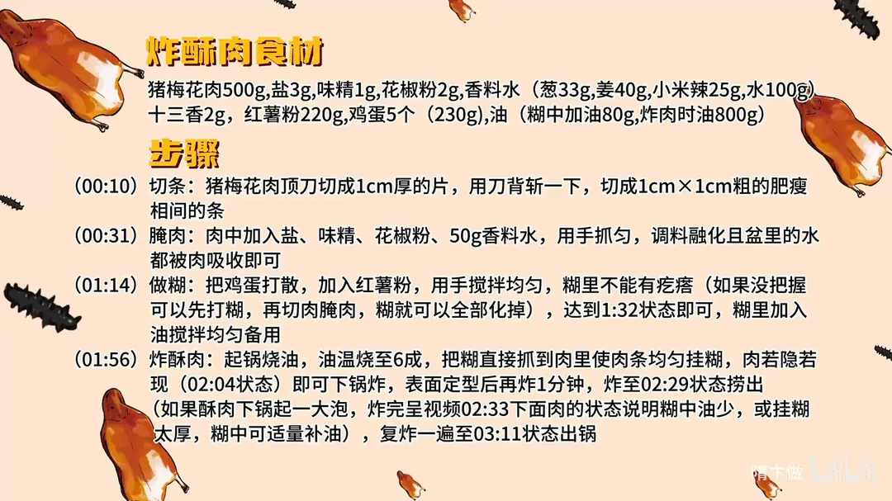

炸酥肉
隋卞一做。红薯粉加鸡蛋的糊是关键，糊里要加油，炸两遍才酥。
原视频：https://www.bilibili.com/video/BV1Jm42137Hc
食材
猪梅花肉、盐、味精 等 13 样
| 类别 | 用料 | 用量 |
|---|---|---|
| 主料 | 猪梅花肉 | 500g |
| 调味 | 盐 | 3g |
| 调味 | 味精 | 1g |
| 调味 | 花椒粉 | 2g |
| 调味 | 十三香 | 2g |
| 香料水 | 葱 | 33g |
| 香料水 | 姜 | 40g |
| 香料水 | 小米辣 | 25g |
| 香料水 | 水 | 100g |
| 糊 | 红薯粉 | 220g |
| 糊 | 鸡蛋 | 5 个（230g） |
| 糊 | 油（糊中加油） | 80g |
| 炸制 | 油 | 800g |
步骤
- 切条：猪梅花肉顶刀切成 1cm 厚的片，用刀背斩一下，切成 1cm × 1cm 粗的肥瘦相间的条。
- 腌肉：肉中加入盐、味精、花椒粉、50g 香料水，用手抓匀，调料融化且盆里水都被肉吸收即可。
- 做糊：把鸡蛋打散，加入红薯粉，用手搅拌均匀，糊里不能有疙瘩（如果没把握可以先打糊，再切肉腌肉，糊就可以全部化掉）；糊里加入油搅拌均匀备用。
- 炸酥肉：起锅烧油，油温烧至 6 成，把糊直接抓到肉里使肉条均匀挂糊，肉若隐若现即可下锅炸，表面定型后再炸 1 分钟，炸至金黄捞出。
- 复炸：复炸一遍至外壳更脆，出锅。
小贴士
- 如果酥肉下锅起一大泡、炸完下面肉发白，说明糊中油少或挂糊太厚，糊中可适量补油。
- 糊里加油能让炸后外壳起酥发脆，这是关键一步。
讲解要点
难度：★★☆☆☆（糊的稀稠和油温，比调味更考验手感）
为什么这么做
- 梅花肉顶刀切、带肥带瘦：顶刀切断纤维不塞牙；带一点肥，炸出来才香、不发柴。
- 用刀背斩一下：把筋膜斩断、肉面拍松，炸的时候不缩、不硬。
- 香料水（葱姜、小米辣泡的水）：一是增香，二是把盐、味精、花椒粉这些干调料化开；肉吸进水，吃着才嫩。
- 抓到盆里无水、无颗粒：水全被肉吃进去，挂糊时才不会往外吐水、脱糊。
- 红薯粉加鸡蛋：红薯粉炸后脆而不回软，鸡蛋让糊抱团、容易上色。
- 糊里打油：油在糊里把粉粒隔开，炸出来起酥更脆，也不容易吸油。
- 糊要打到没有一点疙瘩：有疙瘩下锅会爆，壳上还会留硬块。
- 六成油温、肉若隐若现：糊太厚看不见肉，吃起来全是壳；六成油温外壳定型快，里面还能慢慢熟透。
- 复炸一次：第一遍把肉炸熟，第二遍高温让外壳脱水变酥。
容易翻车
- 糊里有疙瘩，下锅炸开、溅油。
- 糊挂得太厚，或者糊里油少，成品起大泡、看不见肉。
- 油温太低，糊散、肉吸油发腻。
- 不复炸，外壳放一会儿就回软。
原片尾卡

原片文案
AI 字幕校准稿
今天就爱吃肉，等不及了。今天做一个大人小孩都能吃的炸酥肉。
猪梅花肉顶刀切，它是肥瘦都相间的，这样炸起来口感特别好。给它切成大概手指的粗细，看，有肥有瘦，特别漂亮。
开始腌制：放盐、味精、花椒粉，这是我自己磨的。再放个香料水，一是增香，第二呢它可以把里边放的干调料给它融化；里面有点水分的话，你吃着也会更嫩。具体的克数都会放到片尾。抓匀，看着盆里边没有没融化的调料，就可以了；同时盆里也没有水，水都让肉给吃进去了。
然后咱们做糊：把鸡蛋打散，里边加红薯粉，充分地打匀，一个疙瘩都不能有；有疙瘩，下油锅一炸它就炸了。打到这个程度就可以了。然后为了让炸出来的糊更酥脆，里边要打点油。一般把糊调好了，你这肉也腌得没有问题了，咱们就可以下锅炸了。
起锅烧油，六成油温就够。咱们把这糊直接抓到肉里边，里边的肉能若隐若现，这个厚度就可以了。正常家里的火炸个三分钟就肯定熟了，看好火，别让它糊了；如果要是肉少的话，炸完之后它会飘上来，飘了就肯定熟了。炸到这种程度就要捞了，捞了一会儿再复炸一下。
来给你们对比一下：这个起的是大泡，看不见肉，说明你那糊啊油有点少，而且外边挂得有点厚；这种程度呢，吃起来口感是最好的。
复炸的时候等它飘起来，然后把第一锅的也放进去浸炸，让它那个皮上更酥一点。
香，你能很明显地吃到葱姜水的那个香味，还有一丝丝小米辣的辣味，还有十三香的那个香味——它里面的香是香得天花乱坠的那种香。但是香料味只占了大概百分之三十，百分之七十还是以肉本身的香味为主。糊跟肉本身的比例也特别好，完全没有抢肉本身的口感；更多的是糊经过炸制之后，把那香味留在里边了，你一咬，那味道就散开了。回家做吧，比例都给你们放片尾了。